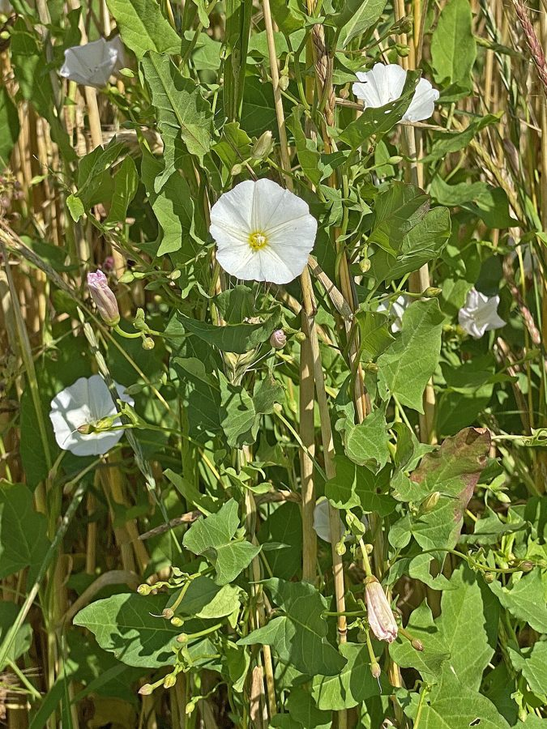

हिरनखुरीField Bindweed
Convolvulus arvensis · Convolvulaceae · FLR-0076

- Scientific name
- Convolvulus arvensis L.
- Family
- Convolvulaceae
- Hindi
- हिरनखुरी
- Status here
- native
- IUCN
- not evaluated
When to look कब देखें
Expected mainly in January, February, March, October, November, December.
हिरनखुरी / Field Bindweed
Convolvulus arvensis L. — Convolvulaceae
हिरनखुरी (हिरन खुरी / फील्ड बाइंडवीड / वाइल्ड मॉर्निंग ग्लोरी) — पूर्वी उत्तर प्रदेश में रबी (सर्दियों) की फसलों, विशेष रूप से गेहूं, जौ, और आलू के खेतों में उगने वाला एक बहुत ही आम, जिद्दी (persistent) और बेल-नुमा खरपतवार (creeping and twining weed) है। यह मूल रूप से भारत का मूल निवासी (native) है और अब पूरी दुनिया में फैल चुका है। इसकी सबसे बड़ी पहचान इसके जमीन पर फैलने वाले या फसल के तनों के चारों ओर कसकर लिपटने वाले पतले तने और इसके तीर के आकार के पत्ते (arrowhead-shaped leaves) हैं, जिनकी बनावट हिरन के खुर जैसी दिखती है, जिसके कारण इसे 'हिरनखुरी' कहा जाता है। इसके फूल छोटे, कीप के आकार के (funnel-shaped) और सफेद या हल्के गुलाबी रंग के होते हैं, जो सुबह खिलते हैं और दोपहर बाद बंद हो जाते हैं। इसकी जड़ें ज़मीन में 1 से 3 मीटर तक गहरी (deep root system) होती हैं, जिसके कारण इसे कुदाल से खोदकर पूरी तरह से नष्ट करना बहुत मुश्किल होता है।
Quick Identification त्वरित पहचान
| Feature | Description |
|---|---|
| Plant habit | Slender, trailing or twining perennial vine, growing 20–100 cm long, wrapping counter-clockwise around crops |
| Leaves | Alternately arranged, simple, arrowhead-shaped (sagittate or hastate), with two sharp pointing lobes at the base |
| Flowers | Trumpet or funnel-shaped (1.5–2.5 cm wide), single or in pairs, pure white or marked with light pink bands |
| Root system | Extensive, deep, fleshy white taproot system that spreads horizontally and shoots up new plants |
| Flowering phase | Flowers open in the early morning sunlight and close tight by noon or early afternoon |
Field tip: Look in wheat fields during January. Search for thin, thread-like green vines wrapping around the wheat stalks and competing for sunlight. Look at the leaves; they are shaped like small arrowheads (or a deer's hoof footprint). Look for small, white or pink trumpet-shaped flowers.
Morphology आकारिकी
Biometrics (typical measurements of mature plants in the northern Indian plains):
| Measurement | Range |
|---|---|
| Vine length | 20–100 cm |
| Root depth | 1.0–3.0 m |
| Leaf length | 2.0–5.0 cm |
| Flower diameter | 1.5–2.5 cm |
| Capsule size | 5–8 mm |
| Seed size | 3–4 mm |
Stem and Roots: Stems are thin, angular, hairless or slightly hairy, climbing up anything they touch. The roots are fleshy, fragile, storing starch, and can regenerate from tiny broken fragments.
Foliage: Simple, alternate leaves. The leaf apex is rounded or pointed, and the basal lobes point downward or outward.
Flowers: Actinomophic, 5-merous. The sepals are short and green; the petals are fused into a smooth, broad funnel.
Fruit and Seeds: A small, globose calyx-enclosed capsule containing 4 dull, dark brown, warty, angular seeds.
Associated Species / Interactions संबंधित प्रजातियाँ
- Crop Competitor: Wraps tightly around the stems of young wheat and mustard plants, dragging them down under its weight and competing for sunlight, soil nutrients, and water.
- Pollinators: Visited by honeybees and small wild bees that crawl inside the funnel flowers to collect nectar and pollen in the morning.
Pests and Diseases कीट और रोग
- Sweet Potato Featherwing Moth: Caterpillars feed on the leaves, chewing large holes in the foliage.
- Bindweed Leaf Miner: Tiny larvae mine between leaf layers, creating white patches.
- Powdery Mildew: Fungal disease creating a white powdery coating during late winter humidity.
Traditional and Ethnobotanical Use पारंपरिक और नृवंशवनस्पति उपयोग
- Traditional Laxative Remedy: The dried root is processed to extract active resinous compounds (convolvulin), used in traditional Ayurvedic practices as a powerful laxative (bhedan) to treat chronic constipation.
- Ayurvedic Skin Wash: The leaves are boiled in water to prepare a disinfecting herbal wash, applied to clean minor skin ulcers, boils, and scabies.
- Emergency Fodder: In dry winter weeks, the creeping vines are collected by livestock owners and fed to goats and cattle as green fodder, though in large quantities it can cause digestive upset in horses.
- Soil Binding: Grows quickly on railway tracks and dry canal borders, helping to bind loose soil with its deep root web.
Expected Locally स्थानीय रूप से अपेक्षित
Not a field record. Written from published accounts for eastern Uttar Pradesh. No confirmed local sighting yet — if you have seen it, that is what the atlas needs.
अभी तक स्थानीय पुष्टि नहीं। यह विवरण प्रकाशित स्रोतों से है, किसी अवलोकन से नहीं।
A highly common winter weed in all agricultural blocks of the Basti district, regularly observed in the wheat fields of Harraiya, Basti, and Vikramjot blocks. Farmers report that hirankhuri is one of the most difficult weeds to control; even if they plow the field repeatedly, new shoots emerge within weeks from the deep, broken root pieces left in the soil.
Distribution वितरण
Global range: Native to Europe and temperate Asia; now naturalized and cosmopolitan worldwide, considered one of the worst agricultural weeds in temperate and subtropical regions.
In India: Widespread in all plains and states, particularly abundant in northern agricultural plains.
In Uttar Pradesh: Abundant state-wide in all farming districts.
In Basti district / eastern UP: Widespread across all agricultural blocks.
Research Questions शोध प्रश्न
Anyone can investigate these | कोई भी इन प्रश्नों की जाँच कर सकता हैsummary
- How many wheat stems can a single trailing Field Bindweed vine wrap around and entangle in a 1-meter square area? — Record vine crop associations.
- Do Field Bindweed flowers open earlier on sunny winter mornings compared to foggy mornings in Basti? — Track flower opening times against temperature.
- What percentage of a Field Bindweed root fragment (e.g. 5 cm piece) can regenerate and sprout new leaves in a pot? — Conduct root propagation tests.
- How deep does the main taproot of a mature Field Bindweed vine go in your local farm soil? — Carefully dig and measure roots.
- Does the population count of Field Bindweed drop when fields are planted with dense mustard crops compared to open wheat rows? / क्या खुली गेहूं की पंक्तियों की तुलना में घनी सरसों की फसल बोने पर हिरनखुरी की संख्या कम हो जाती है? — Compare weed densities in different crops.
Similar Species मिलती-जुलती प्रजातियाँ
| Species | How to tell apart | comparison |
|---|---|---|
| Blue Morning Glory (Ipomoea nil) | Much larger vine; leaves are large, 3-lobed; flowers are bright blue-purple, up to 5 cm wide | नीली घुइयाँ — बड़ी बेल, तीन-लोब वाले पत्ते, बड़े नीले फूल |
| Ivy-leaved Morning Glory (Ipomoea hederacea) | Leaves are deeply 3-lobed; sepals are long, hairy, and curved outward; flowers are blue-purple | हेडरेशिया — तीन-कटे पत्ते, रोएँदार मुड़े बाह्यदल |
| Railway Creeper (Ipomoea cairica) | Leaves are palm-like (5-lobed); flowers are large, purple-pink; grows year-round | रेलवे बेल — हथेली जैसे कटे पत्ते, गुलाबी-बैंगनी फूल |
Field rule: Trailing or twining winter vine with arrowhead-shaped leaves, small white or pink funnel-shaped flowers that close by noon, and a deep white root system, is the Field Bindweed.
Taxonomy & Classification वर्गीकरण
Original description. Carl Linnaeus described the Field Bindweed as Convolvulus arvensis in 1753 in his Species Plantarum (Vol. 1, p. 153). The type locality was listed as Europe (in fields). The genus name Convolvulus is derived from the Latin convolvere, meaning to twine or wrap around. The specific name arvensis is Latin for of fields or cultivated land.
Subspecies. Monotypic — no subspecies are currently recognised.
Family and order placement. Placed in the order Solanales, family Convolvulaceae (morning glory family), tribe Convolvuleae.
Phylogenetic notes. Convolvulus arvensis represents a successful, highly adapted herbaceous perennial lineage within Convolvulaceae that has evolved a deep vegetative taproot system and dormant seeds to survive cultivation and seasonal drought.
IUCN status rationale. Not evaluated (NE) by the IUCN Red List. It has a massive, secure global population as a cosmopolitan agricultural weed.
Photo Gallery फोटो गैलरी
References संदर्भ
- Linnaeus, C. (1753). Species Plantarum. Laurentii Salvii, Holmiae, Vol. 1, p. 153. [original description]
- Kirtikar, K. R. & Basu, B. D. (1935). Indian Medicinal Plants. Vol. III. Lalit Mohan Basu, Allahabad.
- Holm, L. G., Plucknett, D. L., Pancho, J. V. & Herberger, J. P. (1977). The World's Worst Weeds: Distribution and Biology. University Press of Hawaii.
- Weaver, S. E. & Riley, W. R. (1982). The Biology of Canadian Weeds: Convolvulus arvensis L.. Canadian Journal of Plant Science (includes global physiology data).
- World Flora Online (2024). Convolvulus arvensis taxon details.
- GBIF Occurrence Data — Convolvulus arvensis, India (2010–2025).
Source file: species/flora/weeds/field_bindweed.md